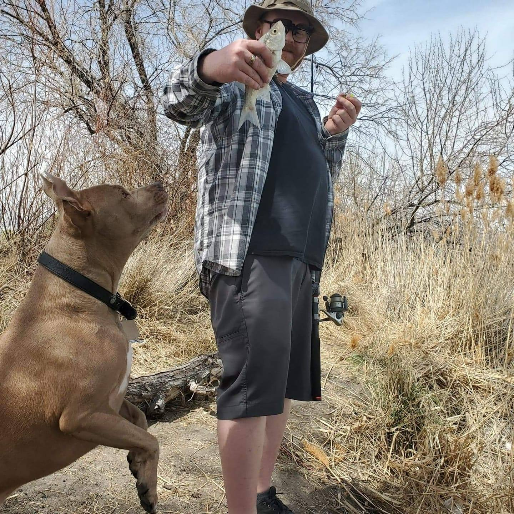

Colby Okerlund
Professional Portfolio

About Me
Hi, my name is Colby Okerlund. I was born and raised in Salt Lake City, Utah. I love to fish most of the summer and hiking around Utahs mountains. I was enlisted in the USMC from 2005 - 2009 as a mortar man and deployed to Fallujah Iraq in 2006. Most of my free time is spent with my wife and two children. We make it a point to get out in nature as much as possible during the summer. My best friend is my dog Billy and was rescued from a shelter. He also enjoys the outdoors.